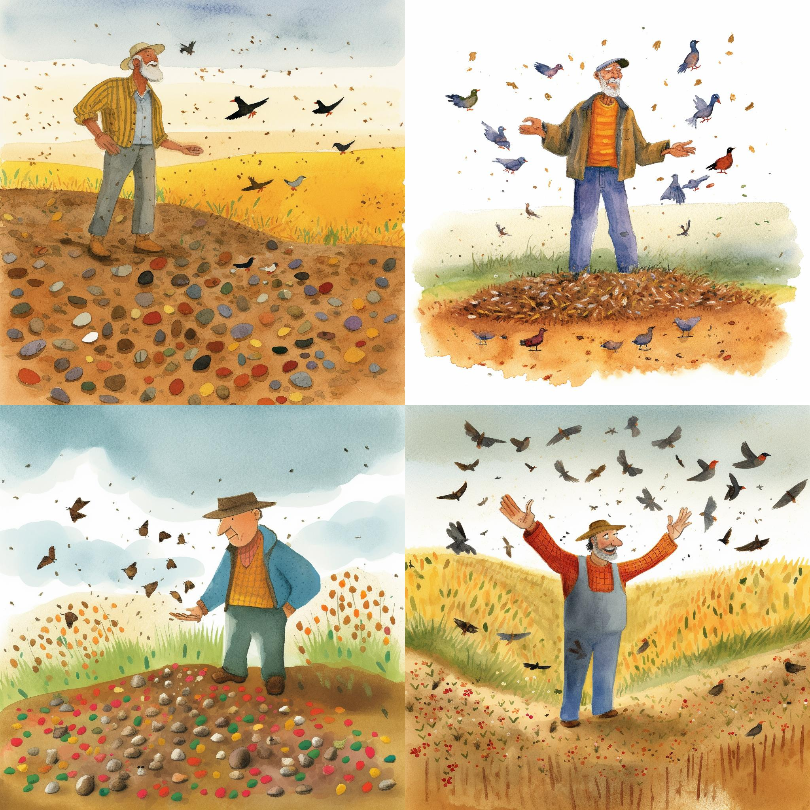
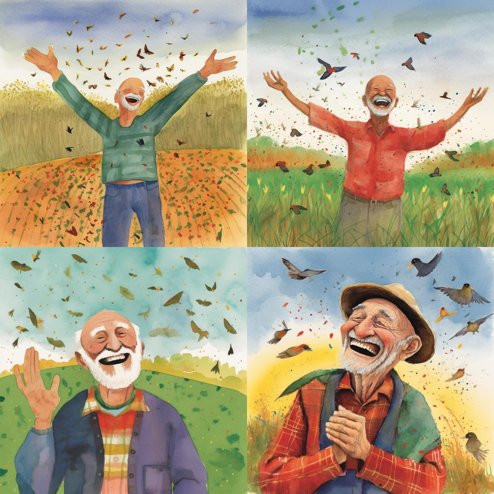
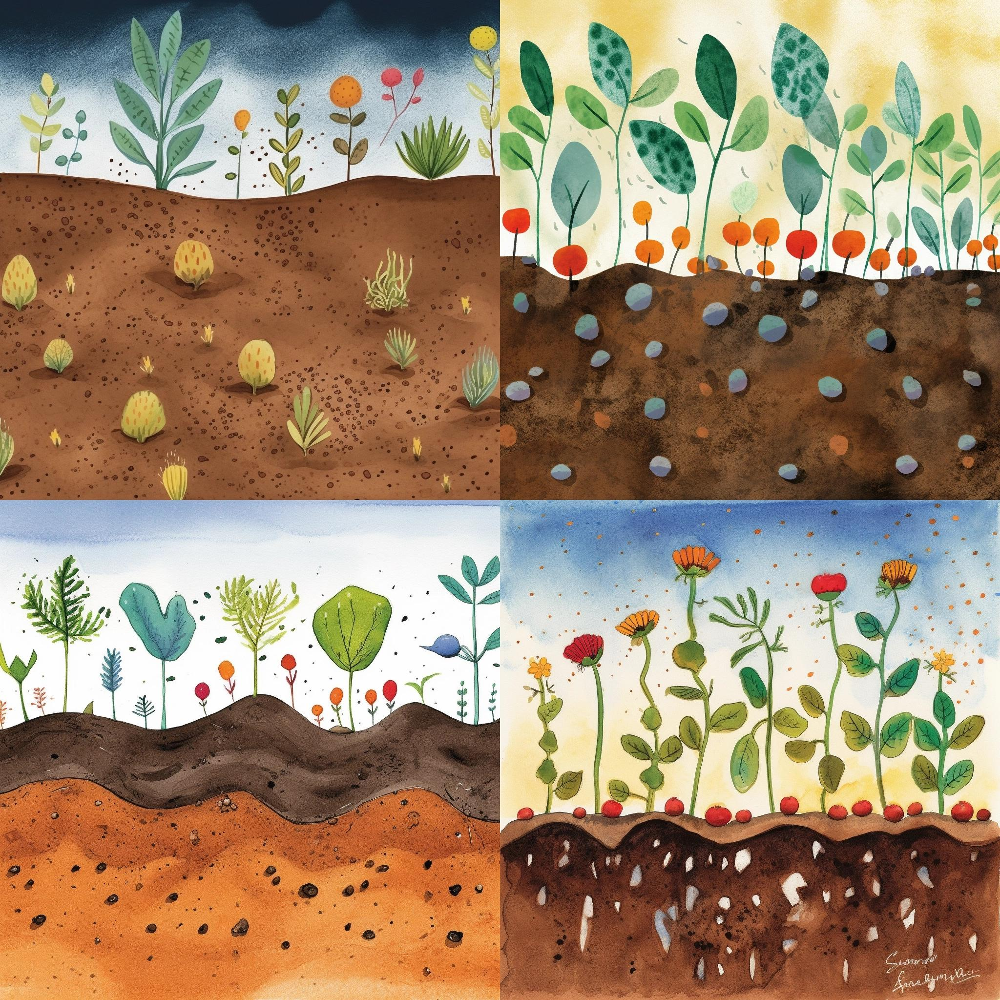
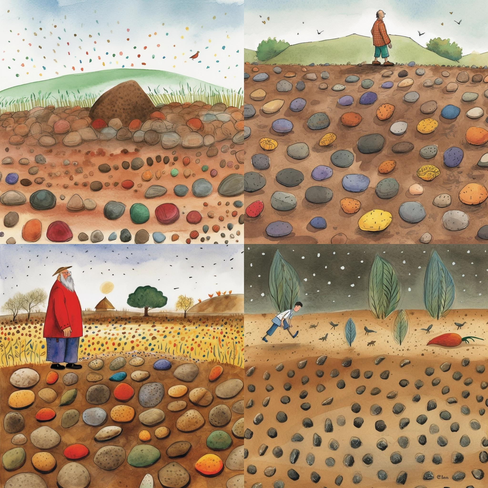
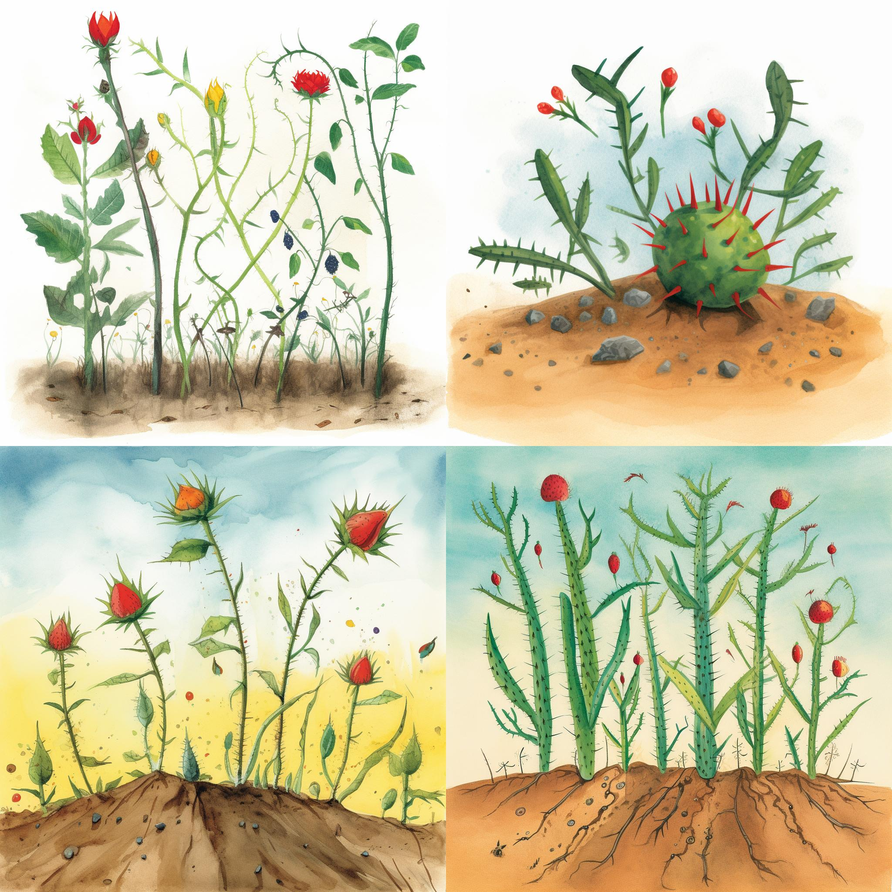
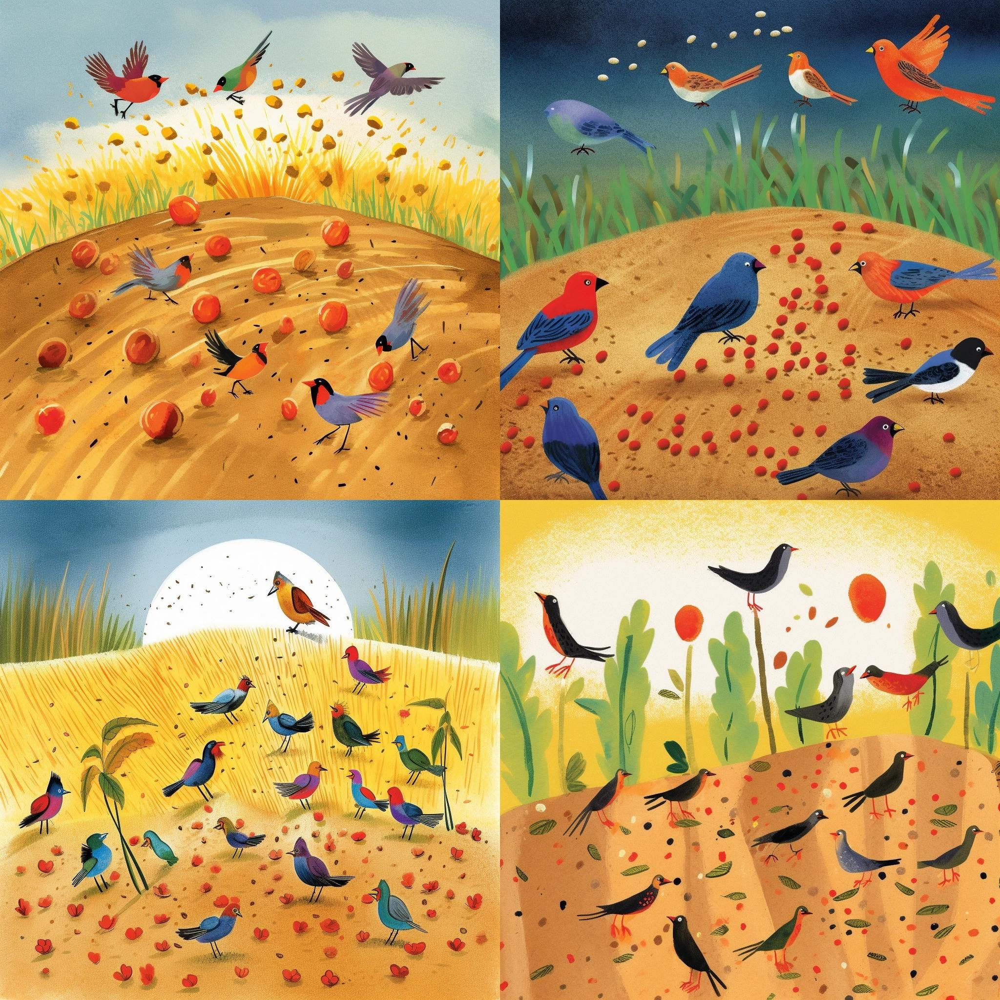
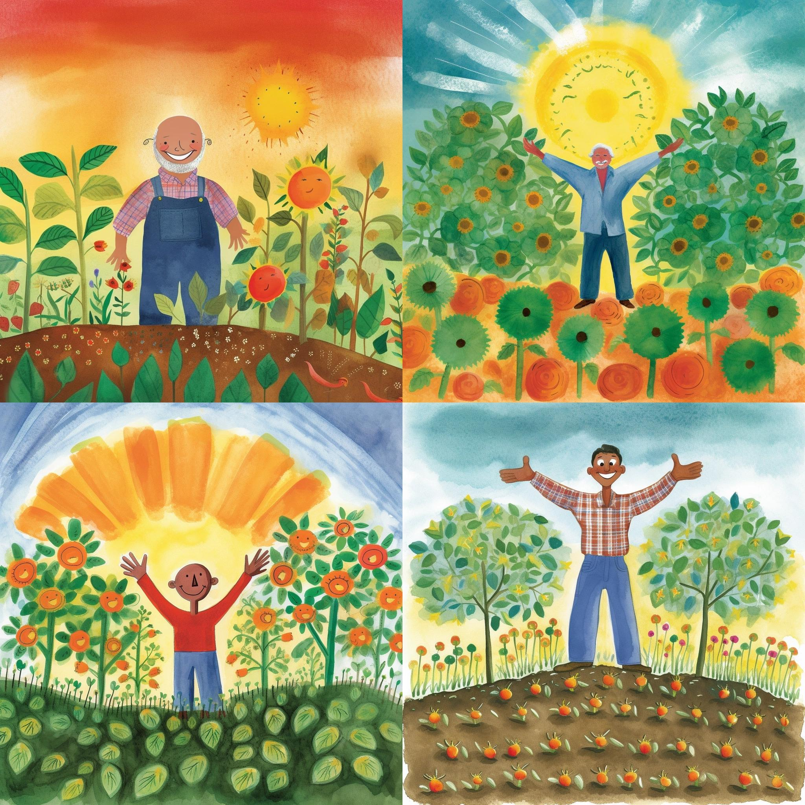

Das Gleichnis vom Sämann
erstellt mit ChatGPT, Deepl und Midjourney Prompts im Stil von Eric Carle
Bild 1: “Der liebevolle Sämann und die vier Böden: Eine Ernte voller Hoffnung”

alternativ:
Ein freundlicher Bauer steht in einem offenen Feld, eine Hand voll Samen in seiner Hand. Er streut die Samen weit und breit, um eine Ernte zu säen. Hinter ihm sieht man vier verschiedene Böden: einen felsigen, einen dornigen, einen von Vögeln umgebenen und einen fruchtbaren.Bild 2: “Der felsige Boden: Die kleinen Pflanzen kämpfen mutig gegen die widrigen Bedingungen”

alternativ
Einige Samen fallen auf den felsigen Boden, wo sie wenig Erde haben. Die Samen keimen schnell, aber sie haben nicht genug Erde, um tief zu wurzeln. Das Bild zeigt kleine, schwache Pflanzen, die im felsigen Boden zu wachsen beginnen.Bild 3: “Der dornige Boden: Junge Pflänzchen suchen ihren Weg durch die Hindernisse des Lebens”

Andere Samen fallen auf den dornigen Boden, wo sie von Dornen und Unkraut umgeben sind. Die Pflanzen beginnen zu wachsen, aber sie werden von den Dornen erstickt, die sie umgeben. Das Bild zeigt, wie die Dornen die jungen Pflanzen umklammern und sie daran hindern, groß und stark zu werden.Bild 4: “Der von Vögeln umgebene Boden: Eine unerwartete Mahlzeit für unsere gefiederten Freunde”

Wieder andere Samen fallen auf den von Vögeln umgebenen Boden, wo sie sofort von hungrigen Vögeln gefressen werden. Das Bild zeigt fröhliche Vögel, die sich an den Samen erfreuen, bevor sie überhaupt eine Chance zum Wachsen haben.Bild 5: “Der fruchtbare Boden: Die Kraft der Liebe und Fürsorge bringt eine reiche Ernte hervor”

Schließlich fallen einige Samen auf den fruchtbaren Boden, wo sie tief wurzeln und wachsen können. Das Bild zeigt große, gesunde Pflanzen, die in der Sonne gedeihen und reiche Früchte tragen. Der Bauer steht stolz neben der reichen Ernte und lächelt, da er weiß, dass er gut gesät hat.Anleitung / Erstellung - The Making of
1. Geschichte erstellen mit ChatGPT-4
Screenshot

Volltext
Beschreibe mir die Geschichte vom Sämann aus der Bibel für einen 8-jähringen in 5 Bildern
Bild 1: Ein freundlicher Bauer steht in einem offenen Feld, eine Hand voll Samen in seiner Hand. Er streut die Samen weit und breit, um eine Ernte zu säen. Hinter ihm sieht man vier verschiedene Böden: einen felsigen, einen dornigen, einen von Vögeln umgebenen und einen fruchtbaren.
Bild 2: Einige Samen fallen auf den felsigen Boden, wo sie wenig Erde haben. Die Samen keimen schnell, aber sie haben nicht genug Erde, um tief zu wurzeln. Das Bild zeigt kleine, schwache Pflanzen, die im felsigen Boden zu wachsen beginnen.
Bild 3: Andere Samen fallen auf den dornigen Boden, wo sie von Dornen und Unkraut umgeben sind. Die Pflanzen beginnen zu wachsen, aber sie werden von den Dornen erstickt, die sie umgeben. Das Bild zeigt, wie die Dornen die jungen Pflanzen umklammern und sie daran hindern, groß und stark zu werden.
Bild 4: Wieder andere Samen fallen auf den von Vögeln umgebenen Boden, wo sie sofort von hungrigen Vögeln gefressen werden. Das Bild zeigt fröhliche Vögel, die sich an den Samen erfreuen, bevor sie überhaupt eine Chance zum Wachsen haben.
Bild 5: Schließlich fallen einige Samen auf den fruchtbaren Boden, wo sie tief wurzeln und wachsen können. Das Bild zeigt große, gesunde Pflanzen, die in der Sonne gedeihen und reiche Früchte tragen. Der Bauer steht stolz neben der reichen Ernte und lächelt, da er weiß, dass er gut gesät hat.
Gib mir noch schöne anrührende Überschriften zu den Bildern
Bild 1: “Der liebevolle Sämann und die vier Böden: Eine Ernte voller Hoffnung”
Bild 2: “Der felsige Boden: Die kleinen Pflanzen kämpfen mutig gegen die widrigen Bedingungen”
Bild 3: “Der dornige Boden: Junge Pflänzchen suchen ihren Weg durch die Hindernisse des Lebens”
Bild 4: “Der von Vögeln umgebene Boden: Eine unerwartete Mahlzeit für unsere gefiederten Freunde”
Bild 5: “Der fruchtbare Boden: Die Kraft der Liebe und Fürsorge bringt eine reiche Ernte hervor”
2. Illustration durch Übersetzung der Bildbeschreibungen mit Deepl und damit Prompterstellung für midjourney
Ergänzung der automatischen Übersetzung für den Prompt jeweils durch Illustration by Eric Carlefür den Stil, --q 2 für die höchste Qualitätsstufe und --v 5für Midjourney Version 5
Prompt 1
A friendly farmer stands in an open field, a handful of seeds in his hand. He scatters the seeds far and wide to sow a harvest. Behind him you can see four different soils: one rocky, one thorny, one surrounded by birds and one fertile. Illustration by Eric Carle --q 2 --v 5
Prompt 2
Some seeds fall on the rocky ground, where they have little soil. The seeds germinate quickly, but they do not have enough soil to root deeply. The picture shows small, weak plants starting to grow in the rocky soil. Illustration by Eric Carle --q 2 --v 5
Prompt 3
Other seeds fall on the thorny ground, where they are surrounded by thorns and weeds. The plants begin to grow, but they are choked by the thorns that surround them. The picture shows how the thorns clasp the young plants and prevent them from growing tall and strong. Illustration by Eric Carle --q 2 --v 5
Prompt 4
other seeds fall on the ground surrounded by birds, where they are immediately eaten by hungry birds. The picture shows happy birds enjoying the seeds before they even have a chance to grow. Illustration by Eric Carle --q 2 --v 5
Prompt 5
Finally, some seeds fall on the fertile soil, where they can root deeply and grow. The picture shows large, healthy plants thriving in the sun and bearing abundant fruit. The farmer stands proudly next to the rich harvest and smiles, knowing that he has sown well. Illustration by Eric Carle --q 2 --v 5
Alles von Gott erdacht, in der Bibel niedergeschrieben und mit künstlicher Intelligenz in Text und Bilder verwandelt unter der Lizenz CC-BY-SA Das heißt, ihr dürft alles Weiterverwenden, Verändern, Anpassen oder sogar verkaufen. Eine Namensnennung von Jörg Lohrer wäre nett.